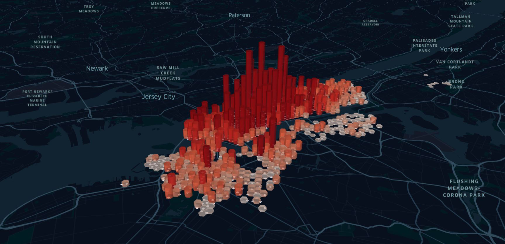
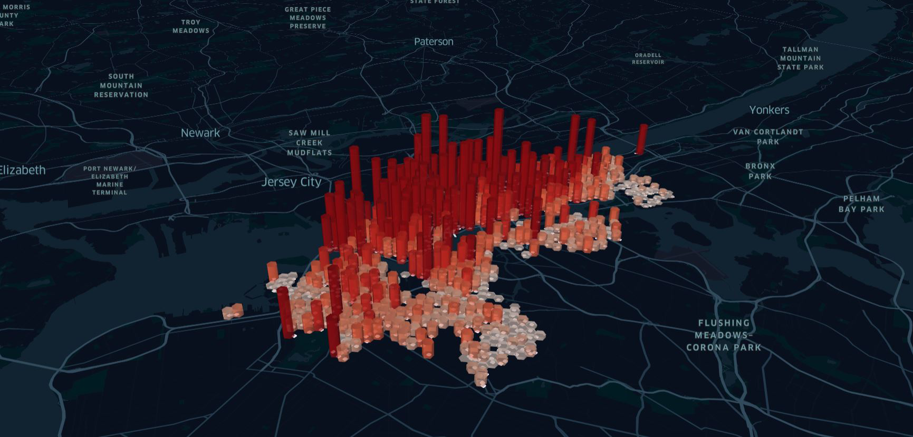

The impact of COVID-19 on New York City Bike
ARCH 6306/6050, DSBA 6010, ITIS 8010/6010: Wednesdays 6pm-8:30pm, Taught Online
Ivan Flores Martinez | Bianca Moore | Jake D'Antoni | Samrhiti Kamat
Research Question
How have the peak hours and numbers of trips effected demand of the city bikes in NYC in 2020?
Background
With the recent outbreak of the coronavirus pandemic in 2020, we aim to compare data on bike sharing services in New York City from the years 2019 and 2020 to see if there are any conclusions that can be drawn relating to the pandemic’s effect on the CitiBike NYC services. Although correlation does not prove causation, we believe that examining these two years and comparing the data will allow us to make assumptions based on the data found.
Mobility trends in 2020 and 2021

The time series graph compares mobility trends from January 2020 to March 2021. Considering the lockdown due to the Covid-19 a severe dip was observed in all the three modes of transport in March 2020. Post March 2020 an increase in mobility was observed with driving being at the highest. It can also be observed that the use of transit systems showed a consistent increase post the lockdown of March 2020.
Top 10 start in 2019

Top 10 stations in 2020

The graph depicts significant differences between the years 2019 and 2020 as the usage of bikes by females decreased in peak hour values. Broadway and East 22 St. station specifically used by female users was seen to have a decrease in the no. of trips from 2019 to 2020. Men were observed to use the Bike Sharing system more frequently as compared to women in both the years.
Number of trips by location in March 2019
The hexagons in the map above represent stations in a 0.2 mile radius each and the height of each hexagons represents the number of trips taken from that cluster of stations. The gradient describes the concentration ranging from highest to lowest across the city. It is observed that the highest concentration was in the Midtown area of Manhattan. The highest number of trips taken in the month of March 2019 is 15,000.
Number of trips by location in March 2020
The hexagons in the map above represent stations in a 0.2 mile radius each and the height of each hexagons represents the number of trips taken at that station. The gradient describes the concentration ranging from highest to lowest across the city. The number of trips decreased drastically as the city went into lockdown due to the COVID-19 outbreak. The highest number of trips reduced to 9,000 for the month of March 2020 as compared to it being 15,000 in March 2019. However, the concentration of the maximum number of trips taken continued to be the bike station locations in Manhattan.
Number of trips by location in June 2020
The hexagons in the map above represent stations in a 0.2 mile radius each and the height of each hexagons represents the number of trips taken at that station. The gradient describes the concentration ranging from highest to lowest across the city. The number of trips increased drastically as the city went into Phase 1 and 2 due to the COVID-19 outbreak, allowing users to use the Bike Sharing systems again. The highest number of trips increased back to 16,000 for the month of June 2020. The concentration of the maximum number of trips taken were not only observed to be high in Manhattan but also in certain parts of Brooklyn which concludes that longer trip durations were starting to be observed.
Trip comparison between 2019 and 2020

The red and white arcs in the map above represent and compare the start and stop locations of the trips taken in 2019 and 2020, respectively. Even though the average trend of trips in 2019 and 2020 remain similar, in 2020, an addition to trips taken from the East site of the city to the center was observed. In conclusion it can be said that longer trips were taken by people in the year 2020, considering the city was at an ease in terms of the Covid-10 impacts.
Covid cases vs number of trips in NYC in 2020

Covid cases in New York City in 2020

The data that was collected and observed included variables relating to location, time, number of trips and user type. COVID-19 shutdowns began in March of 2020 in the state of New York. The number of COVID-19 cases in NYC today amount to over 676,000 with over 28,000 deaths. Due to the amount of cases in NYC, we found it important to determine the effects of the pandemic on the city's shared bike system. We collected data from New York Public Health repository and added it to our analysis to observe impact.With our question in specific we aimed at looking at location and the timeline of the trips. On looking at the graphs concerning peak hours, it is observed that not only did the peak hours fluctuate but also the number of trips varied. Conclusions can be drawn relating to the number of trips, where there was a sharp decrease in March & April of 2020 when national lockdown began. Comparatively, in 2019 there was a sharp increase in these months. In addition, peak hours during 2019 and 2020 both show early morning and evening hours as high points, alluding to the argument that bike sharing services were used primarily for commuting to and from work.
Average number of trips per hours of the day 2019

Average number of trips per hours of the day 2020

The average number of trips per day shows that in 2019, there were two peaks - in the morning and afternoon. This alludes to the conclusion that shared bike systems were used for commuting to and from work. Comparatively, the data from 2020 shows the absence of a morning peak in trips, possibly due to change in working patterns and transition to working-from-home. However, there is still a peak in the afternoon, showing that people continued to use shared bike systems in the evening for pleasure purposes. As seen in the graphs, the demand and the patterns show the usage reducing by half in the first peak (about 8am) and reduced in a lesser intensity at the second peak (between 7pm - 8pm).
Number of trips in NYC in 2020 and 2019
As compared to 2019 the number of trips in NYC drastically decreased in the month of March 2020 due to the lockdown the city faced. However, the overall trend between the years was not affected significantly. As the city went in phase 1 and 2 of the virus outbreak the usage of the Bike Sharing system seemed to have increased again. The number of trips in the month of october 2019 and 2020 seemed to be similar which concludes that the city went back to routine and utility in the later months of the year 2020.
Top 60 stations in 2019
Top 60 stations in 2020
The chord diagram represents connections between the top 60 stations in 2019 and 2020. The interconnections between stations are the trips made between the stations. Compared to 2019, interconnectivity decreased between stations. One explanation of this behavior is that the number of commuters decreased in 2020 while the number of recreational bike users increased. In addition, bike users also made shorter trips in 2020.
March 2019 vs 2020

The average number of trips per hour shows that in 2019, there were two peaks - in the morning at 6am and in the evening at 5pm. This alludes to the conclusion that shared bike systems were used for commuting to and from work. Comparatively, the data from 2020 shows the dip in the usage of morning and afternoon peak in trips, possibly due to change in working patterns and transition to working-from-home. As seen in the graphs, the patterns show the usage reduced but with a lesser intensity concluding that people continued to use shared bike systems for mobility not just for work but also for leisure purposes.
References
- Hu, Winnie. “A Surge in Biking to Avoid Crowded Trains in N.Y.C.” The New York Times. The New York Times, March 14, 2020. https://www.nytimes.com/2020/03/14/nyregion/coronavirus-nyc-bike-commute.html
- Calgary, Open. “Bicycle Routes.” NYC Open Data. Accessed February 17, 2021. https://data.cityofnewyork.us/Transportation/Bicycle-Routes/7vsa-caz7.
- Tedeschi, Alexander. “Rebalancing Citi Bike : a Geospatial Analysis of Bike Share Redistribution in New York City.” RUN, February 26, 2016. https://run.unl.pt/handle/10362/17842?locale=en.
- Teixeira, João Filipe, and Miguel Lopes. “The Link between Bike Sharing and Subway Use during the COVID-19 Pandemic: The Case-Study of New York's Citi Bike.” Transportation Research Interdisciplinary Perspectives. Elsevier, July 8, 2020. https://www.sciencedirect.com/science/article/pii/S2590198220300774.
- Apple mobility trends 2020-2021.
Team & Contributions
Ivan Flores Martinez
Ivan Flores took the lead with regards to setting up the github website, cleaning data, and creating chord graphs for the webpage.
Bianca Moore
Bianca Moore produced multiple graphs for the webpage and worked in RStudio to clean data. She also aided in putting together the github website.
Jake D'Antoni
Jake D'Antoni produced the bike sharing map via Kepler and cleaning the data for the assignment. He also aided in putting together the github website.
Samrhiti Kamat
Samrhiti Kamat helped write the context the graphs and maps in the website. She aided putting together the github website. She also produced the PowerPoint presentation for assignment 2.